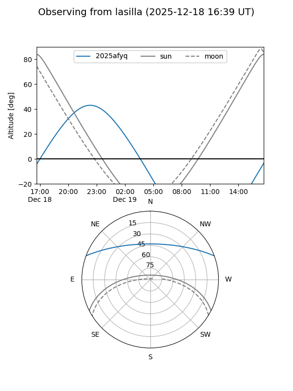
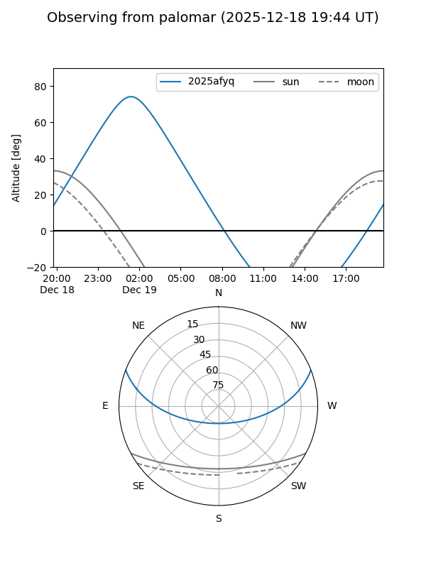

2025afyq
Target 2025afyq at 2025-12-18 11:17
Aliases and brokers:
FINK: fink-portal.org/ZTF25acfxvqz
Lasair: lasair-ztf.lsst.ac.uk/objects/ZTF25acfxvqz
ALeRCE: alerce.online/object/ZTF25acfxvqz
TNS: wis-tns.org/object/2025afyq
YSE: ziggy.ucolick.org/yse/transient_detail/2025afyq
alt names
ZTF25acfxvqz (ztf,fink_ztf)
2025afyq (tns,yse)
Coordinates:
equatorial (ra, dec) = 351.5056,+17.49053
equatorial (HMS+DMS) = 23:26:01.34,+17:29:25.92
galactic (l, b) = (95.6202,-40.80769)
Photometry
last ztfg=19.81, ztfr=19.86
2 ztfg, 1 ztfr detections
Lightcurve

Visibility


Additional plots